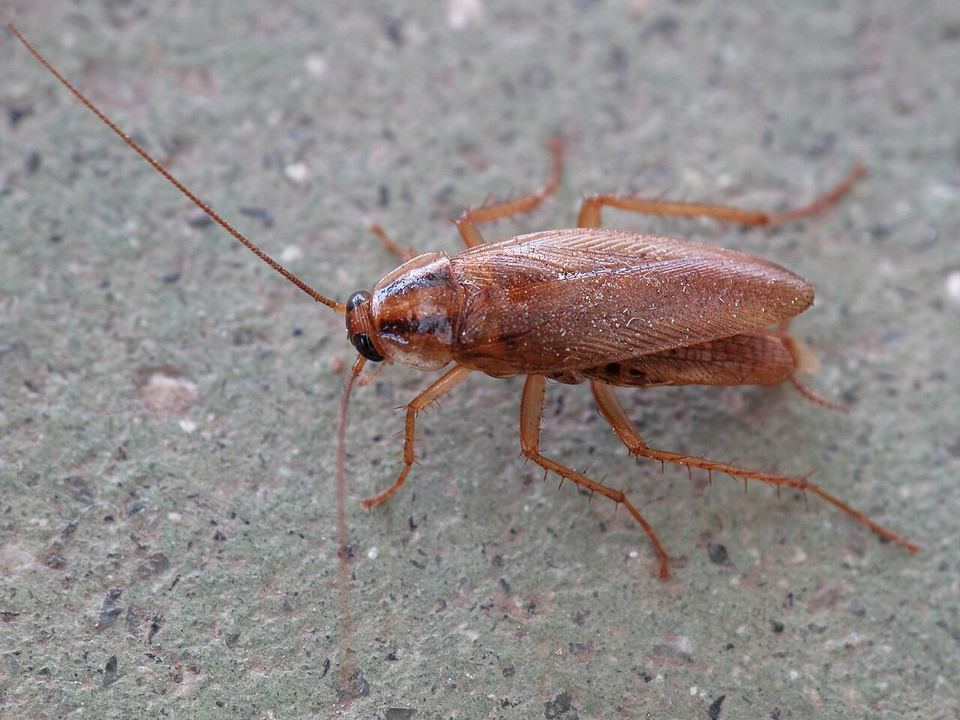

Cafards et blattes : un traitement qui touche la colonie
Les cafards qu'on voit ne sont qu'une petite partie de la colonie. Le reste vit caché près de la chaleur et de l'humidité : moteurs d'électroménager, gaines, joints.
Mis à jour le · par Mathias Sergent, technicien certifié
- Technicien certifié Certibiocide
- Particuliers et professionnels
- Tout le département 13

Quelle blatte avez-vous ?
Le traitement dépend de l'espèce : elles ne vivent pas aux mêmes endroits.
| Espèce | Où on la trouve | À quoi on la reconnaît |
|---|---|---|
| Blatte germanique | Cuisines, salles de bain, restaurants | Petite (1 à 1,5 cm), brun clair, deux bandes sombres sur le dos. La plus fréquente en appartement. |
| Blatte orientale | Caves, vides sanitaires, rez-de-chaussée | Plus grande, brun très foncé à noire, se déplace lentement. |
| Blatte américaine | Réseaux, égouts, chaufferies, locaux humides | Grande (3 à 4 cm), brun-roux, peut voler par temps chaud. |
Les signes d'une infestation
- Des cafards la nuit, qui fuient quand on allume la lumière.
- De petites déjections noires, comme du poivre moulu, dans les coins et sur les charnières.
- Des oothèques : petites capsules brunes qui contiennent les œufs.
- Une odeur âcre et persistante quand l'infestation est importante.
Le piège de l'aérosol
Un aérosol du commerce ne touche que les blattes visibles et disperse souvent la colonie dans d'autres pièces, voire chez les voisins.
Le gel professionnel est appliqué en petites gouttes dans les cachettes. Les blattes le consomment et le rapportent au nid : c'est ainsi qu'on atteint toute la colonie.
Comment on traite les cafards
- Inspection
Recherche des cachettes : moteurs de frigo et de lave-vaisselle, plinthes, gaines, joints d'évier.
- Gel ciblé
Application de gel en points discrets, là où vivent les blattes. Pas besoin de quitter le logement dans la plupart des cas.
- Complément si besoin
Pour les fortes infestations ou les blattes de cave, un traitement complémentaire peut être nécessaire.
- Contrôle
Un second passage vérifie le résultat et traite les éclosions.
Quand le problème vient des voisins
En immeuble, les blattes circulent d'un logement à l'autre par les gaines techniques et les colonnes. Traiter un seul appartement ne suffit pas toujours : un traitement des parties communes, organisé avec le syndic, donne de meilleurs résultats.
Pour les cuisines professionnelles, voir notre page restaurants et métiers de bouche ; pour les immeubles, syndics et copropriétés.
Traitement des cafards dans les Bouches-du-Rhône
Nous intervenons à Marseille (16 arrondissements), dans le Pays d'Aix et autour d'Aubagne, depuis notre base de Trets. Nous passons aussi régulièrement à Gardanne et à Gémenos.
Le rendez-vous est fixé à l'appel, du lundi au samedi de 8 h à 19 h. Décrivez ce que vous voyez, ou envoyez une photo : cela nous aide à venir avec le bon matériel.
Comment reconnaître une infestation de cafards ?
| Signe | Ce que ça indique | Que faire |
|---|---|---|
| Petits insectes bruns qui fuient à la lumière | Blatte germanique, l'espèce des cuisines | Gel dans les cachettes, près de la chaleur |
| Grosses blattes brun-rouge près des siphons | Blatte américaine ou orientale, venue des réseaux | Traitement des évacuations et des regards |
| Petits points noirs dans les charnières de placard | Déjections : la colonie est proche | Inspection des meubles et de l'électroménager |
| Oothèques (petites capsules brunes) | Pontes : la colonie se renouvelle | Second passage pour les éclosions |
Par exemple, un cafard vu en plein jour signale souvent une colonie déjà importante, car ils sortent surtout la nuit. En pratique, les blattes germaniques vivent dans la chaleur des moteurs : réfrigérateur, lave-vaisselle, box internet. Concrètement, un aérosol ne touche que les insectes visibles, alors que le gel est rapporté dans la colonie. Exemple courant : une infestation arrivée dans un carton de livraison ou un appareil d'occasion.
Cafards et blattes : vos questions
Faut-il quitter le logement pendant le traitement ?
Avec un traitement au gel, ce n'est généralement pas nécessaire. Pour un traitement complémentaire par pulvérisation, une absence de quelques heures peut être demandée : les consignes sont données avant l'intervention.
Les cafards sont-ils signe de saleté ?
Pas forcément. Ils cherchent la chaleur, l'eau et des cachettes, et arrivent souvent par les cartons, l'électroménager d'occasion ou les gaines d'un immeuble.
Combien de passages faut-il ?
En général deux : le traitement, puis un contrôle quelques semaines plus tard pour toucher les blattes issues des œufs.
Les cafards sont-ils liés à un manque d'hygiène ?
Pas forcément : ils arrivent souvent par les colis, les meubles d'occasion ou les logements voisins. La propreté limite leur nourriture mais ne suffit pas à les éliminer.
Combien de passages faut-il ?
Souvent plusieurs, car les oothèques résistent aux traitements et éclosent ensuite. Le nombre exact dépend de l'infestation constatée au diagnostic.